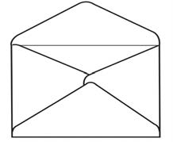
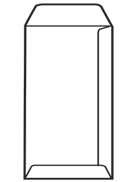
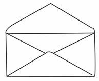
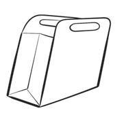
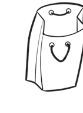
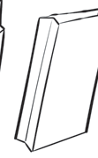

kuhakikisha kuwa unapata matokeo bora. Baadhi ya vifaa vinavyohitajika ni:
- 1. Karatasi safi za rangi mbalimbali na zenye ugumu unaofaa;
- 2. Rula, penseli, mkasi mkubwa na wembe au visu maalumu vya kukatia karatasi;
- 3. Karatasi ngumu kama vile manila, ubao mwepesi, vibanio au pini, na meza;
- 4. Gundi ya karatasi, gundi nyepesi na nzito, na brashi;
- 5. Maji safi, rangi za maji, na makasha makubwa; na
- 6. Sampuli za bahasha, makasha, na mifuko yenye ukubwa na sura mbalimbali.
Utengenezaji wa bahasha na mifuko
Bahasha na mifuko vinaweza kutengenezwa kwa kutumia makunzi ya karatasi za aina mbalimbali. Bahasha na mifuko hiyo huweza kuwa katika umbo tofauti kulingana na matumizi yake. Vielelezo namba 1 na 2 vinaonesha mifano ya maumbo mbalimbali ya bahasha na mifuko.



Kielelezo namba 1: Bahasha katika maumbo mbalimbali



Kielelezo namba 2: Mifuko katika maumbo mbalimbali
Hatua za kutengeneza bahasha
- 1. Chukua sampuli mbalimbali za bahasha na mifuko ya ukubwa tofauti;
- 2. Chunguza sehemu zilizounganishwa kwa gundi. Lowanisha sehemu hizo kwa maji;
- 3. Baada ya dakika tatu hadi kumi bandua. Utaona zinabanduka kwa urahisi;
- 4. Ongeza maji pale panapoonekana pagumu kubandua. Kamwe usitumie nguvu;